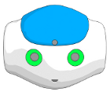
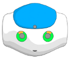
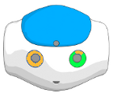
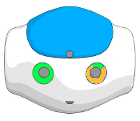

Animation Mode¶
What is the Animation mode¶
The animation mode allows you to set the Stiffness of each part of the robot separately, so you can move manually this part in order to define the next Motion keyframe of your animation.
How to use the Animation Mode¶
 Cannot be tested on a simulated robot.
Cannot be tested on a simulated robot.
To store joints values using the Animation Mode:
| Step | Action |
|---|---|
| Make sure you are connected to a real robot. | |
Create a Timeline box. For further details, see How to create a Timeline box. |
|
| Double click the box in order to display the Timeline. | |
Click the The icon turns red |
|
Click the The button turns red: |
|
| Hold your robot by the waist/torso to prevent it to fall down. | |
Store one by one the Motion keyframes. For further details, see: How to store a position. |
|
Click the The button turns green: |
 Set on/off the stiffness button in the toolbar.
Set on/off the stiffness button in the toolbar. , meaning your robot is stiffened.
, meaning your robot is stiffened. Animation mode button.
Animation mode button. , meaning the Animation Mode is on.
, meaning the Animation Mode is on.How to store a position¶
To store a position:
| Step | Action |
|---|---|
Create a new posture. For each part you want to move:
For further details, see: Tactile commands and Visual feed-back. |
|
Store the position.
To hear the vocal commands said by the robot, say: “Help”. Result:
|
Tactile commands¶
To set the Stiffness:
| Part | Tactile command |
|---|---|
| Head |
|
| Arms |
|
| Legs |
|
Visual feed-back¶
LEDs give you some visual feed-back about which parts of the robot are stiffened or not:
- Blue means that the Stiffness is On,
- Green means that the Stiffness is Off.
| Part | Visual Feed-back location |
|---|---|
| Head | Upper Eye LEDs. |
| Arms | All Eye LEDs (except upper). |
| Legs | Foot LEDs. |
| Visual information | Stiffened parts | Visual information | Stiffened parts |
|---|---|---|---|

|
Head and both arms |  | Nothing |
|  | Head |  | Head and right arm |
|  | Left arm | Right arm |